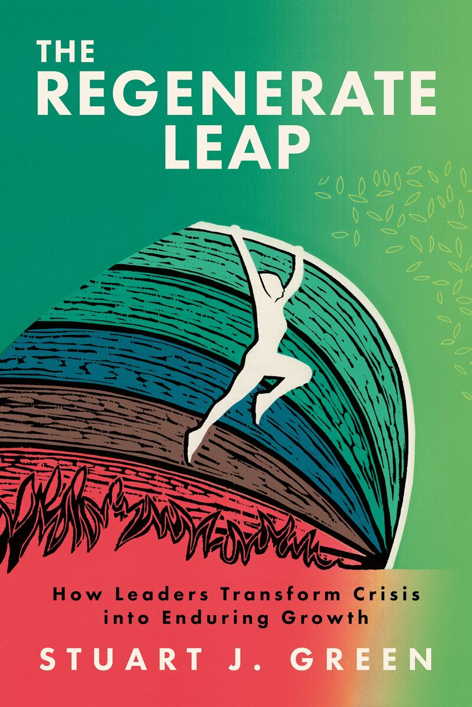

A practical framework for leading through irreversible change.
What happens when the assumptions supporting an organisation, a strategy or a life can no longer be restored?
The Regenerate Leap explores that question through the experience of marine systems, institutional change and personal upheaval.
The book introduces the REGENERATE method: a structured approach to recognising what must end, building new capacity and designing for the conditions that exist now.
Official records checked 17 October 2026. Visit the book website.
The Regenerate Leap addresses one condition: the previous operating model has structurally failed and there is no prior state worth restoring. Most leadership books assume crisis has an end and that recovery means returning to normal. This book begins where that assumption fails.
The book sets out the REGENERATE framework, informed by three decades of work with marine and coastal systems. Ecological responses to severe disturbance vary: some systems recover, others adapt or reorganise. The distinction the book draws between recovery and regeneration is a leadership framework rather than a scientific definition, and it is offered as a way for boards and chief executives to think about conditions that will not return.
The Regenerate Leap draws on professional experience, ecological thinking and the author's experience of irreversible personal change. These experiences informed the development of the method; they do not constitute independent scientific validation.
In the book, the three phases run across ten steps:
"The old advice to simply 'bounce back' is a recipe for extinction."
"His framework moves beyond the tired rhetoric of resilience and provides a clear, actionable methodology for genuine institutional renewal."
The book focuses on leadership when returning to a previous operating model is no longer appropriate. Its distinction between recovery and regeneration is a leadership framework, not an absolute scientific definition. Ecological resilience can include adaptation and transformation.
No. The book draws on marine systems as a source of insight, alongside institutional and personal experience; it does not claim that natural systems prove an organisational model will succeed.
The diagnostic is a thirteen-question initial self-report assessment of operating-model fitness, not an independently validated institutional measurement. The book explains the method for considering what to preserve, change or build next.